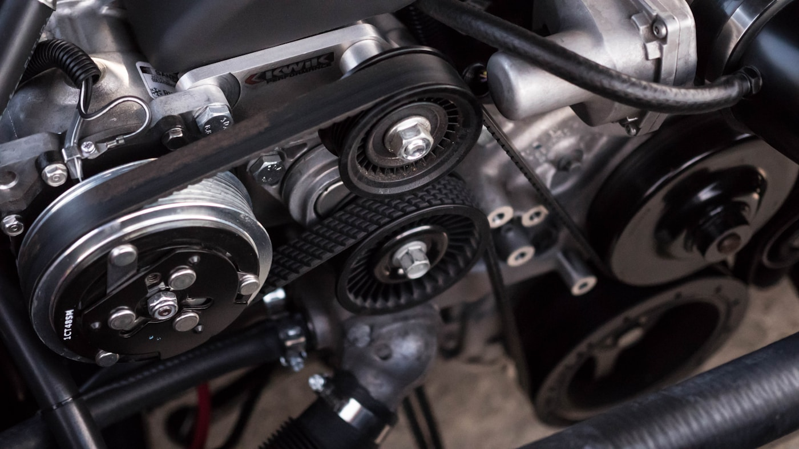

Onsite service without the shop shuffle.
Diagnostics, routine maintenance, no-start help, minor repairs, and repair planning at your location.
When something goes wrong, you want a straight answer: can someone come to the vehicle, diagnose it honestly, explain the repair, and help you avoid unnecessary towing? Onsite Auto is built around that kind of practical, transparent service.
When to call Onsite Auto
Call when you want a clear mobile-first answer before arranging a tow or losing time at a repair shop. Share your vehicle details, current location, symptoms, and any warning lights so we can confirm the best next step.
Service highlights
- Onsite diagnostics and troubleshooting
- Maintenance and repair recommendations
- Clear approvals before additional work
- Service at home, work, or fleet location
Best next step
Call or text (720) 602-5251 with the vehicle year, make, model, current location, and what you are noticing. For less urgent requests, use the request form and include photos or dashboard warnings if available.